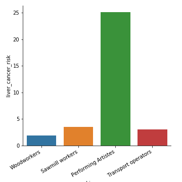

Introduction
- Occupational health
- Health of occupations
Question to ask
In your organisation, you are responsible for health and well-being for the employees. A newly appointed employee, whom you do not know, seeks your appointment and tells you that he suffers from fear of heights. What question would you ask him?
Respond to the question at:
Seven principles of occupational health
- Protect, adapt, and promote care
- Occupational health is a distinct subset of environmental health
- Occupational hazards are specific to occupations
- NZ has interesting statistics of occupational health hazards
- Occupational epidemiology has distinct study patterns
- Occupational health has long established traditions
- Haddon Matrix
Protect adapt, care and promote
- Adapt the work to the worker and worker to the work
Garden worker
You are working as a health scientist looking after employee health for people working in a garden. What will you do? Click here to visit the question
Principle 2: Protect workers from illnesses and prevent illnesses among workers
- Must be able to identify harmful exposure
- Must be able to assess the risks
- Must be able to prevent illnesses
Principle 3: Promote health and well-being of all workers
- Study how people work best
- Arrange for best adjusted work environment
- Arrange for curative and rehabilitative services when they are availabe
- Establish primary care services
Sewage treatment plant worker
Princple 3: Occupational health is a subset of environmental health
- workers tend to be exposed for longer duration and higher intensity of exposure
- Workers tend to be healthier and younger than the members of the general public
Imagine you are studying illnesses at a workplace site
Healthy worker effect
In which, sicker workers are likely to stay home and healthier workers are over-represented in the worker pool; This leads to lower estimation of diseases when workplace surveys are conducted
Principle 4: You find out about disease prevalence in workplaces using surveillance
- You must know what toxins are present in the workplace to understand possible health conditions that can arise in the workplace
- Your cohort of workers are readily identifiable and you can follow them over time
- This principle is referred to as sentinel surveillance
- You can identify first cases of diseases among the workers faster
import pandas as pd
import numpy as np
import matplotlib.pyplot as plt
import seaborn as sns
from bokeh.plotting import figure, output_notebook, output_file, showdatadict = {
'occupation': ['Psychopaedic workers',
'Psychopaedic nurses', 'European school dental nurses',
'Non-european school dental nurses',
'Dentists', 'Dental assistants', 'School dental assistants', 'Laboratory workers',
'Medical workers', 'Nurses', 'Dental staff',
'General staff', 'Police officers', 'Customs officers',
'Prison officers'],
'hepatitis_antibody_pct': [16, 12, 26, 68, 14, 7, 7, 20, 22,
10, 36, 13, 12, 6, 23]
}
mydata = pd.DataFrame(datadict)
mydata.head()| occupation | hepatitis_antibody_pct | |
|---|---|---|
| 0 | Psychopaedic workers | 16 |
| 1 | Psychopaedic nurses | 12 |
| 2 | European school dental nurses | 26 |
| 3 | Non-european school dental nurses | 68 |
| 4 | Dentists | 14 |
Risk of hepatitis among different professional groups

Risk of liver cancer among different professional groups

chart = sns.catplot(x = 'occupation', y = 'hepatitis_antibody_pct',
data = mydata, kind = "bar")
chart.fig.autofmt_xdate()
c2 = chart.fig
c2.savefig("occ.png")workers = {
'working_groups': [
'Woodworkers', 'Sawmill workers',
'Performing Artistes', 'Transport operators'
],
'liver_cancer_risk': [
1.87, 3.55, 25.1, 3.05
]
}
wdf = pd.DataFrame(workers)
wdfplot = sns.catplot(data = wdf,
kind = "bar",
x = "working_groups",
y = "liver_cancer_risk"
)
wdfplot
wdfig = wdfplot.fig
wdfig.autofmt_xdate()
wdfig.savefig("liver_ca.png")Haddon Matrix
| Factor phases | Human factor | Agent | Physical Env | Sociocultural Env |
|---|---|---|---|---|
| Pre-event | ||||
| Event | ||||
| Post-event |
Application of Haddon Matrix for Motor Vehicle Accident management
| Factor Phase | Human | Agent | Physical Env | Sociocultural Env |
|---|---|---|---|---|
| Pre-event | Driver training | Make the car safe | Wide, well-marked roads | Strict law enforcement for speed limits |
| Event | Remain calm | Deployment of airbags | Clear the road | Arrangement of ambulance services |
| Post-event | First aid and resuscitation | Vehicle repair | Rapid cleaning of the | |
| accident site | Insurance schemes and healthcare to take care of the injured |